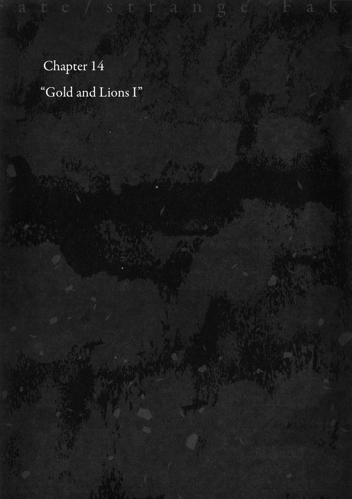
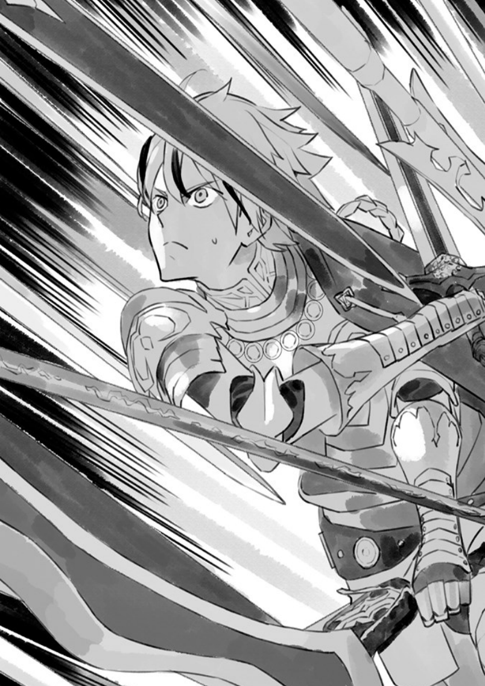
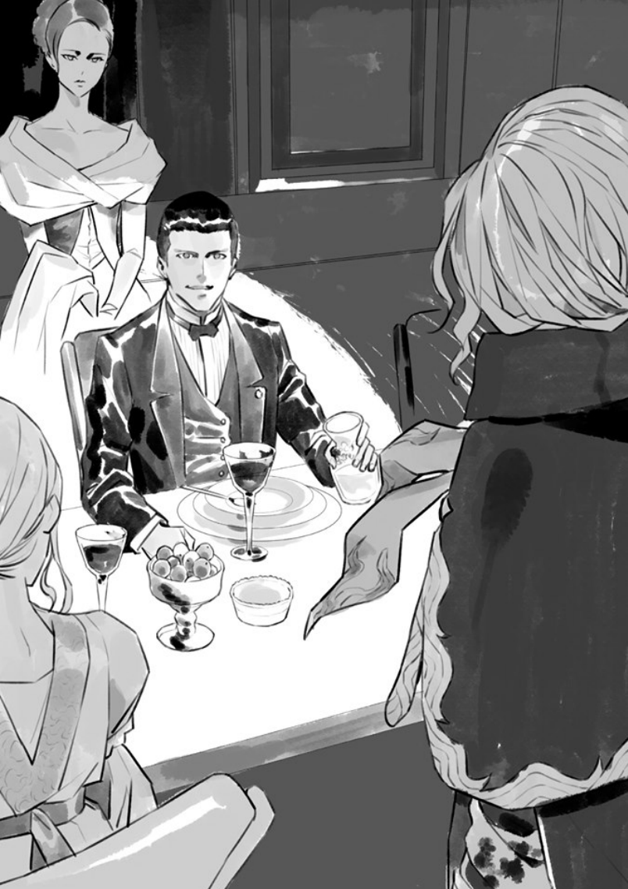

"Ouro e Leões I"
Ouro e Leões I
Várias horas antes, Rua Principal, perto do Hospital Central de Snowfield
A cena parecia saída de uma fantasia. Não, porém, no sentido de um paraíso encantador. Era fantástica no sentido de uma batalha entre deuses ou de uma visão do Inferno.
Berserker, Jack the Ripper, havia se transformado em mais de duzentos demônios. Sua supremacia esmagadora matara o cão demoníaco de três cabeças que pertencia ao Archer "verdadeiro", aquele que se autodenominava Alkeides, e parecia prestes a subjulgar também o Espírito Heroico... quando esse poder de se tornar um demônio, um Fantasma Nobre da própria Origem Espiritual, foi completamente roubado pelo Fantasma Nobre de Alkeides, "Regeneration Pandora: Usurpadora dos Ventos Celestiais".
Um Fantasma Nobre que roubava Fantasmas Nobres. Seu poder desafiava a razão. Com ele, Alkeides adquirira uma força grotesca. Chutou Jack para longe e ergueu a arma para massacrar os policiais que estavam em seu caminho. Mas então surgiu o outro Archer, o primeiro de todos os heróis, envolto em armadura dourada. A chegada adicional de Saber, com seus cabelos loiros riscados de vermelho esvoaçando, e de seu grupo atirou a situação a uma confusão ainda maior.
"Bom, essa é nova. Esses 'Servos' podem mesmo ser criaturas do abismo?" perguntou Saber, Ricardo I, o "Coração de Leão", ao jovem de cabelos escuros atrás dele. A situação era obviamente anormal e repleta de mortes súbitas se ele desse um único passo em falso, mas Saber parecia completamente à vontade, como se aquele fosse exatamente o lugar onde pertencia.
O jovem de cabelos escuros, Sigma, o autoproclamado Mestre de "Lancer Chaplin", alheio ao clima ao redor num sentido diferente do de Saber, respondeu com naturalidade.
"Ouvi dizer que anti-heróis também podem ter aparecido na Guerra do Santo Graal de Fuyuki. Segundo meu empregador, seres assim às vezes são invocados quando as condições são propícias."
"Entendo. Bem, ela é capaz de invocar fadas, afinal. Se tivesse surgido uma banshee ou algo assim, eu gostaria de dar uma olhada por nostalgia, mas pelo visto este não é um oponente diante do qual eu possa relaxar."
"Não dá para simplesmente ficar sentado e assistir."
Saber examinou o Espírito Heroico que assumira aquela aparência demoníaca e então ergueu o olhar.
"O mesmo vale para o espalhafatoso lá em cima." Acima deles estava um homem vestido de ouro, exalando uma aura poderosa.
"Conheça o seu lugar, vira-lata", dirigiu-se a Saber com claro desagrado o Espírito Heroico que os observava do alto do campanário da igreja. "Quem lhe concedeu permissão para erguer os olhos até mim?"
Arrogância. Se alguém quisesse resumir seu modo de falar em uma palavra, essa seria a escolha natural. Saber, porém, percebeu de imediato que não era simples soberba. Ele entendeu que aquele homem dizia, ao mesmo tempo, que ele ainda assim era digno de receber tal permissão.
O Espírito Heroico dourado pairava acima dele. O arqueiro demoníaco estava à sua frente. Então aquele sujeito extravagante também é um Archer? Entendo. Dois archers realmente confirmam que esta Guerra do Graal não é normal. Ao que tudo indicava, exatamente como o Lancer que ele conhecera na floresta havia avisado, aquela Guerra do Santo Graal estava longe de ser comum.
Apesar disso, o conhecimento que recebera do Graal dizia respeito a uma Guerra do Santo Graal "adequada". Isso provavelmente significava alguma coisa.
Mas Ricardo não tinha tempo para considerar perguntas difíceis naquele momento. O Espírito Heroico dourado provavelmente o superava de longe. A força de sua Origem Espiritual rivalizava com a do belo Lancer que Ricardo encontrara na floresta. Bastava um olhar para saber que ele não tinha a menor chance se lutassem de frente.
E ainda havia o grotesco arqueiro com chifres demoníacos brotando da cabeça, com quem ele conversara mais cedo. Também era óbvio que aquele Espírito Heroico era poderoso demais para que ele tivesse qualquer esperança.
A Origem Espiritual de Ricardo se enrijeceu, alertando-o insistentemente para o perigo. O aviso vinha dos fragmentos que não eram exatamente Espíritos Heroicos e que o acompanhavam devido ao seu Fantasma Nobre.
"Vai morrer à toa? Recuar enquanto ainda há tempo", insistiam friamente os avisos de Locksley, o assassino, Pierre, o arqueiro, e dos outros fragmentos de Origens Espirituais.
Ele também conseguia perceber as Origens Espirituais de um espadachim de aparência indiferente e de um mago que apenas sorria de leve, mas o próprio Saber estava concentrado nos adversários avassaladores à sua frente, com os olhos brilhando.
"Meu coração me deu permissão. Duvido que algum dia eu pudesse olhar para você de cima, mas o tomo por um Espírito Heroico célebre, digno de ser admirado. Um rei, a julgar por seu modo. Não é todo dia que encontro alguém que mereça respeito só por estar ali. Eu conheço o meu lugar e, por isso mesmo, agradeço por ter podido estar aqui hoje."
"Vira-lata. Pretende me avaliar com esses olhos? Não preciso dos seus agradecimentos, eu não lhe concedi nada."
O Espírito Heroico de armadura dourada falou friamente, sem alterar a expressão. "Desapareça de uma vez." Ao mesmo tempo, o espaço atrás dele se distorceu e incontáveis armas surgiram de buracos no ar. Quando se moveram, já o faziam com a intenção de matar Saber, que arregalou os olhos, surpreso.
Como flechas disparadas de arcos retesados, inúmeras armas envoltas em Energia Mágica comparável à de Fantasmas Nobres foram arremessadas contra o lugar onde Saber estava.
Sigma deve ter sentido o perigo com antecedência, porque já havia recuado para um beco ao lado da igreja.
Deixado sozinho no local, Saber hesitou por um instante, mas então falou como se tivesse enfim entendido a situação.
"Quando você disse 'desapareça', queria dizer deste mundo!" Sacou a própria espada com um sorriso alegre. "Ha ha! Que sujeito divertido!" Era uma espada ornamental de fio cego, dessas que adornavam as paredes da mansão nos pântanos que Sigma usava como base. Para Saber, porém, bastava ter cabo para ser uma bela arma.
A lâmina brilhou por um instante e começou a varrer do ar as armas lançadas pelo Espírito Heroico dourado.
Mesmo assim, só conseguiu abater algumas delas, uma gota no oceano em comparação com as dezenas de Fantasmas Nobres que choviam sobre ele.
O Espírito Heroico dourado aparentemente julgou que aquilo bastava e já voltara sua atenção para o Archer monstruoso. O arqueiro de aspecto demoníaco, porém, voltou-se para Ricardo. Sua expressão era ilegível por trás do pano estranho que lhe cobria o rosto.
Os instintos de Ricardo como Espírito Heroico o alertaram de imediato de que estava sendo avaliado com algum propósito obscuro, mas ele não tinha tempo para pensar nisso. Em menos de um segundo, as incontáveis armas já estavam quase sobre ele.

Ricardo saltou, brandindo a espada mais uma vez, e dançou para dentro da estreita brecha deixada pelas poucas armas que conseguira repelir. Desviara do ataque por um fio, mas as armas se enterraram no chão ao redor, esmagando o asfalto. A terra despedaçada transformou-se numa nova ameaça a Ricardo, desabando sobre o lugar onde ele estava.
Ricardo, porém, já não estava mais ali.
"Entendo, entendo! Então lâminas tão magníficas quanto estas causam desastres só de se fincarem no chão!" gritou Ricardo, movendo-se com incrível rapidez enquanto agarrava um dos Fantasmas Nobres cravados no solo, uma arma em forma de espada longa. "Que manufatura esplêndida! Só de segurá-la, sinto como se tivesse um exército às minhas costas! E não estou falando apenas da quantidade de Energia Mágica que ela contém; falo da execução, da construção, da composição! Dá para ver num relance que até o menor de seus adornos é ao mesmo tempo simples e completo! Se cada uma dessas armas for obra do próprio planeta, então elas formam ao mesmo tempo as cabeceiras dos rios e as planícies férteis! Ei! Escute! Isto é maravilhoso! Todas essas outras armas também são tão boas assim?! E você as lançou como se não fossem nada! De que maharaja você é? Ah, digo isso com franqueza e respeito: você é magnífico, e eu o invejo!"
Apesar de ter acabado de escapar de um ataque que, se o atingisse, certamente lhe seria fatal, os olhos de Ricardo brilhavam como os de uma criança. Seu acesso súbito de entusiasmo arrancou olhares atônitos dos policiais, que faziam o possível para manter distância e se reorganizar.
As próximas palavras saídas da boca de Ricardo pareceriam puro suicídio para qualquer um que conhecesse o Espírito Heroico dourado.
"Diga! Já que você tem tantas... se importaria de me dar algumas?"
Dentro da igreja
"Como ele consegue sorrir numa situação dessas?" A maior igreja de Snowfield ficava do outro lado da rua, em frente ao hospital. Num canto dela, uma mulher murmurou, prendendo a respiração.
"E então?" Uma voz sombria soou atrás dela. "Pelo seu olhar, senhorita... posso presumir que você seja a Mestre daquele Saber?"
As palavras do padre enviado pela Igreja Santa para supervisionar esta Guerra do Santo Graal,
Hanza Cervantes, fizeram a mulher loira que espiava pela janela, Ayaka Sajou, lançar-lhe um rápido olhar e então balançar a cabeça.
"Eu... não sou Mestre." "Oh? Mas sinto um caminho de Energia Mágica ligando vocês dois. Você não veio até esta igreja buscar santuário?"
"...Não. Eu só vim porque Saber disse que este seria o lugar mais seguro por perto." Ayaka falou de forma brusca, mas com o mínimo de cortesia devido à posição do padre. Hanza não pareceu particularmente ofendido e juntou-se a ela para olhar a rua enquanto continuava:
"Santo Deus. Isto deveria ser um abrigo. Não posso permitir que tratem o lugar como torre de vigia ou trincheira. Bem, tanto faz. Usar tudo o que estiver à mão é do que a guerra vive. Especialmente guerras entre magos."
Hanza ergueu um pouco o olhar e soltou um suspiro contrariado. "Parece que um Espírito Heroico subiu ao telhado. Honestamente, o que ele pensa que esta igreja sagrada é?"
"Tomei você por uma simples mosca, mas vejo que é um mendigo sem vergonha." O Espírito Heroico no telhado da igreja pareceu se interessar por Ricardo pela primeira vez. Virou não só o olhar, mas a própria cabeça para encará-lo.
O Espírito Heroico dourado olhou para baixo com menos raiva do que pena nos olhos. Ricardo, porém, permaneceu imperturbável.
"Suponho que tenha sido rude pedir que você me desse as armas! Eu adoraria comprá-las, se puder pagar o preço!"
Ricardo continuou falando casualmente com o Espírito Heroico dourado. "Mas, depois de pôr os olhos em tesouros assim, não consigo suprimir o que eles despertam em mim! Se pudesse, eu correria para o campo de batalha com quantos conseguisse carregar! Presumo que, já que você atacou primeiro, nós já estejamos em guerra, mas, diante de peças tão finas, quero fazer as coisas do jeito certo, não importa a circunstância! Gostaria de pegar emprestadas essas armas à vontade enquanto lutamos! O que acha disso?"
"Você tem coragem para brincar assim enquanto põe as mãos em meus tesouros com tamanha desenvoltura, vira-lata!" O Archer dourado franziu o cenho. "Ainda assim, ao que parece, você tem olhos para um bom trabalho antes de deixar o brilho toldar sua mente. Como recompensa, permitirei que manche meus tesouros com seu sangue. Receba essa honra com gratidão."
Quando terminou de falar, ele já havia agido e lançado dezenas de novas armas do nada. Elas choveram impiedosamente sobre Ricardo, que empunhava tanto a espada recém-tomada quanto a espada com que viera.
Eram ligeiramente mais rápidas e mais numerosas que no ataque anterior. Ricardo teceu o corpo por entre as armas, firmando os pés sobre os blocos de entulho arremessados ao alto e usando-os como degraus para saltar bem no ar.
"Já que estou arriscando a vida por essa brincadeira, quero lhe pedir mais um favor!" Então, girando como um acrobata, desferiu uma sequência pesada de golpes. "O que eu quero não é sangue nas suas armas." "Oh-ho..." "É deixar nem que seja um arranhãozinho nessa sua armadura magnífica." Esquivando-se do enxame de golpes mortais que vinha em sua direção, Ricardo mudou de rumo no ar. Alterou completamente sua trajetória sem qualquer apoio. Embora devesse estar impondo grande tensão ao próprio corpo, torceu-se ainda mais, somando a força da rotação para fazer sua espada alcançar o Espírito Heroico dourado.
Ao ver isso, o Espírito Heroico carrancudo puxou a espada que trazia na própria mão. "Então você, mero gladiador, tece magia!" O Espírito Heroico dourado aparou aquele ataque quase-surpresa e caiu para o telhado um nível abaixo do campanário, encarando Ricardo, que ainda segurava um de seus tesouros.
Ele não gritou de raiva nem perdeu a compostura; sua voz mantinha o tom de uma repreensão por falta de cortesia.
"Não, não fui eu." Julgando que ainda não tinha como sequer trazer o Espírito Heroico dourado para dentro de seu campo de combate, Ricardo tornou a empunhar as espadas e sorriu de modo provocador para o oponente acima de si.
"Foi uma brincadeira que o meu séquito pregou em você."
"...Ele é rápido." O grotesco arqueiro, Alkeides, mantinha distância e observava as capacidades do novo competidor com um olhar frio que contrastava com sua aparência feroz.
Sua destreza provavelmente era comparável à da Rider amazona montada. Alkeides não sentia divindade alguma nele, o que lhe dizia que aquele Espírito Heroico fora formado como um humano puro.
Sua velocidade, porém, ultrapassava os limites humanos, e a Energia Mágica que girava ao seu redor estava envolta numa aura que não era nem humana nem divina.
Não é forte a ponto de gelar meu sangue. Mas, em termos puramente de velocidade, talvez me supere. Dependendo do Fantasma Nobre que possua, ele merece cautela.
Alkeides então se lembrou do poder, semelhante à Energia Mágica, que irrompia do corpo de Saber. Era como... as Náiades que raptaram meu servo Hylas... Estava a ponto de puxar das profundezas de sua Origem Espiritual as lembranças de quando deixara os Argonautas, mas foi forçado a abandonar aquela linha de pensamento.
Os policiais à sua volta haviam retomado formação e davam sinais de que retomariam o ataque contra ele.
"Humph... Peço desculpas por me concentrar em outros inimigos durante nosso confronto." "...Você não pretende recuar?" perguntou um dos oficiais. Alkeides balançou a cabeça. "Assim como vocês têm aquilo que devem proteger, eu tenho coisas que devo roubar. Não há necessidade de nos entendermos. Se alguém pudesse encontrar terreno comum com minhas intenções, um vilão assim também seria meu inimigo."
Ele destruiria quem se opusesse a ele. Também destruiria aqueles que fizessem as pazes com ele. Soava extremo ao absurdo, mas Alkeides continuou como se estivesse testando os oficiais. "O que pretendo fazer é massacrar uma criança incapaz de compreender meus motivos. Depois que eu fizer isso, não terei mais nada a tratar com vocês. Algum de vocês abandonaria uma criança para salvar a própria pele?"
Ele apertou o arco enquanto fazia a pergunta. Não puxou a corda. Apenas o segurou com força. Ainda assim, se resolvesse de repente brandi-lo, o resultado seriam baixas imediatas. Não importava a qualidade dos Fantasmas Nobres empunhados pelos policiais. O Espírito Heroico diante deles estava além desse tipo de distinção. As pernas de todos tremiam, mas, ainda assim, eles não fugiram. Não desviaram os olhos sequer por um instante.
Eles não estavam destemidos. Alguns continham lágrimas e batiam os dentes. Se aquela tivesse sido uma missão normal, teriam solicitado uma retirada temporária.
Mas eles entendiam. Se recuassem ali, seria o fim. Não haveria tropa de choque pesadamente armada nem Guarda Nacional vindo lidar com aquele criminoso monstruoso. E, mesmo que houvesse, jamais seriam mais aptos a enfrentá-lo do que eles,
já armados com Fantasmas Nobres.
Eles eram os melhores. Estavam ali porque eram os melhores peões que a polícia, como organização, tinha a oferecer.
Não saberiam dizer se aquilo vinha de alguma sugestão que o chefe implantara neles ou de uma rotina que se infiltrara neles como autossugestão. Eles, registrados como Clã Calatin, tinham apenas a palavra do chefe.
"Vocês são a justiça."
Apenas essas palavras, sem nada que as sustentasse. Mas, para aqueles que nelas acreditavam, essas palavras eram um feitiço, ou talvez uma bênção, que atava ação e destino.
E o que mais se via preso por essas palavras era um jovem oficial que continuava em campo apesar de ter perdido o braço direito.
Orlando Reeve, chefe do Departamento de Polícia de Snowfield, era um dos administradores, ou melhor, um dos mentores, da "Guerra do Santo Graal Falsa".
Para os cidadãos comuns, um de seus subordinados, John Wingard, poderia ser chamado de policial ideal.
Quando mal tinha idade para entender o que se passava, ele viu a morte da própria mãe na TV.
O pai de John rapidamente desligou a televisão para poupar o filho daquela cena envolta em chamas, mas aquele instante de fogo ficou gravado de forma indelével na mente de John.
Sua mãe fora uma policial condecorada inúmeras vezes por seus feitos. John se lembrava de que o pai, normalmente pouco emotivo, lhe contava histórias sobre ela na hora de dormir para fazê-lo parar de chorar.
Olhando para trás, talvez aquilo tivesse sido uma espécie de maldição. Desde então, John passou a perseguir a sombra da mãe que mal se lembrava de ter conhecido.
Nem quando entrou para a polícia lhe contaram que seu pai era um mago. John era o terceiro filho, e o irmão mais velho seria o próximo chefe da família, de modo que, como mago, John nunca fora visto como nada além de um reserva para o irmão.
Ao que parecia, seu pai escondera a verdadeira identidade até da mãe de John, mas os altos escalões do governo dos Estados Unidos, ou melhor, certos departamentos que lidavam com o campo da magia, conheciam sua existência.
Quando se tratava de lidar com Mistério, nenhum país, por mais poderoso que fosse, deixava de ficar atrás da Igreja Santa e da Associação dos Magos.
Foi nesse contexto que John foi convocado a uma certa instalação policial e informado sobre suas origens. Seu pai, ao que tudo indicava, já havia concordado. John fora vendido ao Estado sob a condição de que seu pai, afastado da Associação dos Magos, recebesse apoio financeiro do governo.
John ficara confuso, mas, no instante em que ele próprio executou magia de fato, seu ceticismo se desfez e ele foi forçado a aceitar a realidade.
Sentiu medo. Se esse poder realmente existia, então quantos casos haviam sido encobertos com ele? Quantos casos não resolvidos envolviam magia? Quantas pessoas inocentes tinham sido condenadas por informação falsa?
Ele conseguia entender o conceito de ocultar Mistério. O que não conseguia entender era o conceito de sacrificar outros para fazer isso.
Para os magos, era algo corriqueiro, mas John fora criado como uma pessoa comum. Em meio à ira diante da arbitrariedade da sociedade dos magos, Orlando Reeve falou com ele.
"Quando hereges cometem atrocidades, é preciso outros hereges para mantê-los na linha." John, recrutado por Orlando e designado a uma unidade sob seu comando direto, foi transferido para Snowfield, onde aprendeu uma verdade chocante.
"Esta cidade vai se tornar um campo de batalha para magos. Agora que o governo já entrou em ação, não há como deter isso.
"Podíamos lutar contra o governo, mas isso nem seria imprudência; seria pura estupidez. Sendo assim, nosso dever é continuar mantendo a ordem enquanto isso acontece. Precisamos provar a todos os magos que, aqui, a fronteira com o mundo da magia é guardada.
"Nunca se esqueça: se falharmos, no pior dos casos oitocentas mil pessoas serão sacrificadas." John não concordava com tudo o que o chefe dizia. Chegou inclusive a tentar fazer aquele plano ser abandonado, convicto de que nenhum governo poderia ser tão cruel.
Quanto mais, porém, aprendia sobre o plano, mais entendia que nenhum esforço individual conseguiria mudar nada a tempo. Passou a acreditar que o curso proposto pelo chefe era o mais racional.
Eles tomariam o controle do rumo da Guerra do Santo Graal e suprimiriam a situação antes que os cidadãos comuns sofressem dano.
John acreditava que, se conseguissem isso, isso por si só serviria como prova. Se tivessem poder para superar Espíritos Heroicos, os familiares supremos, então se tornariam um grande freio contra os magos só por continuarem ali.
John não entendia que os monstros chamados magos jamais teriam esse tipo de bom senso. Para magos que tratariam até a própria vida como peão para alcançar a Raiz, um "freio" constituído apenas de força esmagadora não passava de um belo objeto de observação.
Por não ter sido criado como mago, John era incapaz até mesmo de compreender os artifícios astutos por meio dos quais a Associação dos Magos e a Igreja Santa, guardiãs do Mistério no sentido mais verdadeiro, espalhavam suas raízes pelo mundo.
E havia ainda mais uma coisa que ele não entendera. Não importava quão espetacular fosse a arma em suas mãos, nem o quanto aprimorasse sua magia, sua mente e seu corpo... existiam lá fora monstros apavorantes capazes de reduzir tudo isso a nada.
O momento em que John percebeu isso foi o momento em que o monstro comumente conhecido como "Apóstolo Morto", que se autodenominava Jester Karture, arrancou-lhe o braço direito.
Ele perdera o braço por completo quando este fora "devorado" pelo hematófago que se chamava Apóstolo Morto, durante o ataque à delegacia no dia anterior. Mas, como seu apoiador, Caster, Alexandre Dumas, lhe providenciara um novo braço prostético, o chefe de polícia, a contragosto, permitira que ele voltasse ao serviço ativo.
Só lhe haviam permitido voltar como apoio aos outros membros do Clã Calatin, e não para ficar na linha de frente... mas eles rapidamente haviam perdido qualquer capacidade de manter uma formação distinguindo frente e retaguarda. Metade dos quase trinta policiais armados com Fantasmas Nobres sofrera ferimentos e já não conseguia se mover normalmente. Os remanescentes mal davam conta de sustentar algum tipo de formação e estavam longe de ter condições de travar uma luta adequada por conta própria, agora que Jack the Ripper havia recuado.
Eles tampouco esperavam que outro Espírito Heroico sobre o qual já tinham informações de antemão, Gilgamesh, o Rei dos Heróis, fosse entrar no conflito.
Ele no momento estava travando combate com o recém-chegado Saber, mas o estilo de luta do Rei dos Heróis era ao mesmo tempo bizarro e direto. Ele obrigava os oponentes a abrir mão da própria vida pela força de uma quantidade avassaladora. Já haviam ouvido falar de seu disparo indiscriminado de Fantasmas Nobres, mas, agora que o viam com os próprios olhos, não conseguiam fazer nada além de deixar a cena queimar-se em suas retinas.
Por um momento, John chegou a se perguntar se não estariam enfrentando o arqueiro grotesco apenas para evitar encarar a realidade do poder do Rei dos Heróis, mas o Espírito Heroico à sua frente não era menos perigoso, então abandonou essa comparação como algo sem sentido.
"O que pretendo fazer é massacrar uma criança incapaz de compreender meus motivos. Depois que eu fizer isso, não terei mais nada a tratar com vocês. Algum de vocês abandonaria uma criança para salvar a própria pele?" perguntou solenemente o arqueiro diante deles.
Eles não tinham obrigação alguma de responder... mas John abriu a boca antes mesmo de perceber o que estava fazendo.
"Se houvesse, eu não riria e também não ficaria decepcionado. Mas isso não significa que eu possa deixar você passar."
"Oh? Então você não vai correr?" "...Se eu estivesse calmo e pensando no futuro, eu gostaria de correr. Duvido que vá conseguir vencê-lo faça o que fizer... Mas tenho mais medo de abandonar uma criança em troca de um futuro e de sangue-frio."
Depois de ouvir essa resposta e examinar John por um instante, porém, o grotesco arqueiro fez um pronunciamento estranho.
"...Você tem coragem, filho do homem. Não o chamarei de temerário. Por isso, tenho pena de você." "...?" "Não..." disse o arqueiro ao atônito John. "Isso não lhe diz respeito." No instante seguinte, ele já estava bem à frente de John. "Quê...?" O movimento pareceu instantâneo, mas não foi alcançado por mera velocidade física; foi realizado explorando um lapso de atenção.
O movimento provava que o arqueiro grotesco não dependia só de força física, mas possuía também técnica nascida de um treinamento sobre-humano. John, porém, não se desesperou diante disso.
Ele não teve tempo sequer de apreciar a diferença de poder antes de o enorme arco atingir seu pescoço.
Então, antes mesmo de entender o que havia acontecido consigo e antes de ter qualquer chance de provar que podia lutar com o braço prostético que Dumas lhe dera... John Wingard foi lançado pelos ares, com o pescoço quebrado, e se chocou contra a porta envidraçada de entrada do hospital num estrondo ensurdecedor.
Mesmo quando um policial digno de pena estava prestes a perder a vida, o duelo entre Ricardo e o Archer dourado continuava a se desenrolar sobre o telhado da igreja.
O Espírito Heroico dourado mantinha uma sucessão implacável de ataques sem deixar de parecer perfeitamente calmo. Ainda assim, de vez em quando lançava um olhar investigativo a Ricardo, que continuava a desviar de sua investida, e acabou por lhe fazer uma pergunta sem abandonar o porte altivo.
"Vira-lata, eu lhe permito responder às minhas perguntas." "Sinto-me honrado." Ele afrouxou os ataques, mas não havia complacência nem vaidade nos olhos do oponente. Ricardo percebeu com clareza que aproveitar a oportunidade para avançar só faria com que recebesse o peso de um contra-ataque devastador. Assim, decidiu parar por um instante e ouvir o que o oponente tinha a dizer.
"Você já passou por uma situação parecida antes, não passou? Dá para notar pelo jeito como você desvia."
"Sim", respondeu Ricardo com um dar de ombros. "Passei pela mesma coisa ontem. Só que pelo lado oposto, por assim dizer."
"...E o que aconteceu com o seu oponente?" "Viramos amigos. Nossos Mestres... bem, contratantes... também pareciam se dar bem." Ricardo se corrigiu em deferência ao fato de Ayaka negar ser sua Mestre, mas isso não pareceu fazer grande diferença para o oponente, que não demonstrou reação especial a esse detalhe. Ricardo, no entanto, não percebeu que as pálpebras do Espírito Heroico dourado se contraíram de surpresa ao ouvir as palavras "viramos amigos". Ainda assim, ele conseguiu notar que seu humor havia mudado.
Até então, ele estivera "eliminando um inseto insolente". Agora, porém, sua hostilidade diminuíra e outra atmosfera passava a preencher o espaço. Era a atmosfera com que Ricardo se cercara em vida, mas esse fato se perdia para seu eu atual.
"Entendo... Pode ser meu amigo, mas continua tão brando com os outros como sempre." O Espírito Heroico dourado falou com um sorriso torto. Suas palavras confundiram Ricardo, que teve um mau pressentimento quanto ao que viria a seguir.
"O quê?" "Meu amigo." Já ouvi isso em algum lugar. Mais precisamente, um dia antes. Quando propôs uma aliança ao Espírito Heroico que encontrara na vasta floresta.
"Veja bem, esse melhor amigo meu é um tanto difícil de agradar. Sempre que tento fazer amizade com alguém ou firmar uma aliança, ele diz algo como 'vou testá-lo para ver se é digno do meu amigo' e afasta a pessoa com exigências absurdas."
Então Ricardo percebeu que, ao contrário de antes, todo o espaço ao redor dele começava a se distorcer.
Ah, pelo visto agora vou morrer mesmo, não? Cercado de todos os lados pelas distorções que lançavam Fantasmas Nobres, Ricardo sentiu a "morte" com cada centímetro do corpo.
O herói dourado dirigiu-se a ele exatamente como o Lancer que Ricardo encontrara na floresta dissera que faria.
"Vou testá-lo para ver se é digno do meu amigo." "Ora essa, só porque alguém possa acabar levando seu amigo..." Ricardo começou a brincar, mas se interrompeu. Ele não era insensível. Bastou um olhar para a expressão do herói dourado para perceber que o oponente não podia ser movido por simples cobiça, ciúme ou qualquer outra emoção vulgar.
"Por favor, esqueça o que eu disse. Foi infantil da minha parte." "Fez bem em se interromper. Meus parabéns. Se tivesse concluído essa frase, eu teria decepado sua cabeça e encerrado tudo isto sem sequer me dar ao trabalho de testá-lo."
Então o herói dourado se dirigiu a Ricardo não como rei, nem como guerreiro, nem como Espírito Heroico, mas como juiz.
"As circunstâncias mudaram. Vira-lata, eu o reconheço não como ralé, mas como um 'buscador' digno da minha provação. Se sobreviver, será aliado do meu amigo e meu 'inimigo' certo.
"Se esse momento chegar, eu lhe permitirei outra vez deixar seu sangue em meus tesouros, desta vez como 'pessoa'. Considere-se honrado."
__________
Cliques, estalos, tilintares. Agrupamentos de pequenos sons vagavam pela escuridão do homem.
Vozes sussurrantes misturadas ao som de objetos duros se chocando faziam vibrar levemente os tímpanos de John.
Os sons metálicos, que se recusavam a parar mesmo enquanto as vozes falavam, soavam ásperos, mas, para John, havia neles uma espécie de elegância musical.
"Onde eu estou...?"
Ergueu-se devagar. Estranhamente, não sentia dor, mas todos os outros sentidos estavam turvos. Só o olfato lhe fazia cócegas na mente, um aroma apetitoso que misturava licor de frutas e manteiga tostada.
Foi então que John percebeu que estava num restaurante. Uma luz morna, alaranjada, enchia o ambiente, mas não era luz elétrica; era o brilho das chamas de velas.
John avistou um único homem sentado à enorme mesa comprida iluminada por esse brilho, cercado de mulheres de beleza deslumbrante que conversavam com ele amigavelmente e, de vez em quando, tornavam a encher sua taça.
"Hum... eu..." Quando John tentou falar com as pessoas à mesa, o homem enxugou a boca com elegância usando um guardanapo e então se virou calmamente para encará-lo.
"Olá. Vejo que acordou." "O quê...? Sr. Du, Caster?!" Era Alexandre Dumas, o Caster que firmara contrato com o chefe de polícia e que John e os outros membros do Clã Calatin conheciam bem. Só que seu cabelo estava ainda mais despenteado e ele parecia um pouco maior do que quando John o encontrara em seu ateliê.
"Hum, o que estou fazendo aqui...? Onde estão todos os outros?" Foi então que John percebeu que Dumas não estava olhando para ele. "Hã?" John tentou tocar um castiçal, mas sua mão atravessou o objeto. E não era só isso: uma bela mulher carregando pratos atravessou seu corpo como se ele fosse um fantasma. Então John percebeu que, naquele lugar, ele não existia de verdade.
Seu breve treinamento como mago deve ter surtido algum efeito, porque ele reconheceu que aquilo não era um sonho comum, mas algo de significado místico.
"Relaxe. Isto é um restaurante. É meio refinado, então tente não fazer escândalo. Inimigo ou aliado, aconselho você a ouvir o que tenho a dizer por enquanto."
À primeira vista parecia que Dumas estivesse falando com John, mas suas palavras eram na verdade dirigidas a alguém que estava atrás dele, um pouco à sua lateral.
John ainda estava confuso, mas se controlou e se virou devagar para olhar atrás de si. E lá... estava um único homem ferido. Parte do corpo estava enfaixada, com manchas de sangue ainda úmido aqui e ali. Mas tanto o branco das ataduras quanto o vermelho escuro do sangue já seco foram rapidamente apagados da impressão que John teve do homem.
Negro.

O negro do casaco do homem parecia expressar a cor de sua alma. Sua pele era pálida a ponto de parecer doentia, e seus cabelos estavam longe de ser escuros. Ele claramente devia ter se envolvido em algum problema muito sério, porque, embora sob o casaco John percebesse relances de roupas finas, dignas de um nobre, o próprio casaco parecia chamuscado de ponta a ponta. Ainda assim, John não conseguia deixar de sentir que a negrura daquele casaco era a verdadeira essência do homem.
Enquanto John hesitava, o homem do casaco negro continuava encarando Dumas com cautela, sem dizer uma única palavra.
Dumas, talvez percebendo a sede de sangue do homem, deu de ombros e acenou com a mão. "Ah, retiro o que eu disse. Não sou fã de ser morto, então deixe-me esclarecer que eu não sou seu inimigo. Se fosse, a esta altura você já estaria num navio rumo ao Inferno. Estou enganado? Aliás, considerando os 'inimigos' que você enfrentou, você daria sorte se uma viagem ao Inferno fosse o pior que tivesse recebido."
Dumas pegou um jarro d'água próximo e encheu uma taça enquanto continuava. "Enfim, tome um gole. Se precisar que alguém prove antes para ver se tem veneno, eu faço essa gentileza." Ao ouvir isso, o homem todo negro se dirigiu a Dumas sem baixar a guarda. "Quem é você...? Você... sabe sobre mim...?" "Se você colocar desse jeito, sim. Não estou envolvido diretamente, mas aconteceu de eu descobrir a seu respeito. Sobre o que você já conseguiu fazer e sobre o que está tentando fazer agora."
Diante disso, o homem sombrio lentamente se pôs de pé, ainda mais alerta que antes. Dumas lhe estendeu a taça d'água e indicou com a cabeça o assento do outro lado da mesa, como se o estivesse testando.
"Sente-se. Um conde não devia ficar parado assim." "..." "Ah, ou prefere que eu o chame por outro nome?" Então Dumas pronunciou um nome próprio que era ao mesmo tempo a superfície e o núcleo mais íntimo daquele homem.
"Edmond Dantès. Belo nome. Fica muito bem impresso no papel, sabe?
"Embora 'O Conde de Monte-Cristo' desse um título melhor para um romance."
Centro de Snowfield
"Uma provação, é?" perguntou Ricardo ao homem que estava com ele no telhado, enquanto voltava a aprontar a espada. "Entendo. Pensei que fosse um Archer, mas por acaso você é da Classe Ruler?" Recorreu então ao conhecimento concedido pelo Graal e mencionou uma Classe Extra.
O Espírito Heroico dourado, porém, riu com escárnio. "Tolo. Um Ruler numa Guerra do Santo Graal não passa de uma balança imparcial que julga segundo os padrões do mundo. Nada há de imparcial em meus julgamentos. O caminho que percorri e a riqueza que acumulei em meu tesouro são as balanças que o julgarão."
Diante de um Espírito Heroico que declarava de forma tão ostensiva que ele próprio era a regra, Ricardo sorriu com alegria e assentiu.
"Sou um tolo, é? Ouço isso bastante." Ricardo suspirou, apoiando a espada no ombro e lançando um olhar para a rua lá embaixo. "Na verdade, só vim parar aqui porque ouvi dizer que os guardas que defendem esta cidade iriam investigar um Espírito Heroico espalhando uma praga misteriosa e achei que talvez eu pudesse ajudar em alguma coisa. Suponho que encontros numa Guerra do Santo Graal realmente acabem levando naturalmente à luta."
"Não dissimule, vira-lata", riu com desdém o Espírito Heroico dourado. "Do que você tem a lamentar? Você está se divertindo com esta situação mais do que qualquer outro."
"..." Ricardo devolveu apenas um sorriso destemido e fez ao Espírito Heroico dourado uma pergunta em resposta.
"Sabe... seu amigo chamou essa praga de 'maldição negra'. Aqueles guardas estão reunidos para fazer algo a respeito, não é? Tem certeza de que não quer ajudá-los? Sempre podemos formar uma aliança."
Ricardo, que insistia em chamar os policiais de "guardas", recordou o que seu aliado Lancer lhe dissera, que "se a maldição e a lama se misturarem", seria "um desastre", enquanto aguardava uma resposta.
O Espírito Heroico dourado, porém, manteve os braços cruzados e os olhos fixos em Ricardo. "Aquele feitiço insolente? Eu o explodirei quando se mostrar. Nada do que você fizer mudará esse resultado. Está se tornando um pequeno incômodo, mas a execução da fonte da maldição dará fim a isso."
"Entendo. É verdade que acabei de chegar e ainda não compreendi toda a situação, mas parece que a sua 'provação' vai exigir tudo o que tenho."
Ricardo estalou o pescoço e perguntou sobre o impasse em que se encontrava. "Não é só a minha vida que está na balança; é todo o meu passado e todo o meu futuro juntos. É isso, não é?"
"Chega de conversa. Você é um tolo que precisa que expliquem tudo nos mínimos detalhes?" Ricardo observou aquele Servo dourado fazer tal declaração absurda com um sorriso enviesado. "Entendo. Posso aceitar isso. Então isto já é um campo de batalha no qual a sobrevivência está em jogo." Em seguida, ao pronunciar as palavras seguintes, o Coração de Leão entrou em ação.
"O pacto está selado. Tomarei as palavras que trocamos agora por gritos de guerra... e lançarei minha invasão."
No instante em que avançou um passo, as distorções no ar ao seu redor começaram a brilhar. Então, como se todas as estrelas que cobriam o céu noturno tivessem despencado, inumeráveis Fantasmas Nobres choveram sobre Snowfield.
Ricardo saltou do telhado do prédio vizinho à igreja quando o "julgamento" se fechou sobre ele por todos os lados. Era ao mesmo tempo uma série infinita de golpes e um único ataque sem fim. Morte avançando de todas as direções, sem qualquer término à vista.
Mas Ricardo não era uma presa que simplesmente se deixaria caçar. Afinal de contas, era um Espírito Heroico manifestado na Classe Saber, dita a "melhor" das sete.
Diante da provação daquele insondável Espírito Heroico dourado, Ricardo começou a liberar o próprio poder de herói com a Origem Espiritual de um rei.
A chuva de Fantasmas Nobres desabava, alguns rápidos, outros lentos. Ricardo saltava pelos telhados enquanto se enfiava entre eles.
Fantasmas Nobres investiam contra ele. Ricardo chutou uma das armas e torceu o corpo, escapando por um fio da saraivada de golpes que se seguiu.
Seus movimentos eram brutos demais para serem chamados de acrobacia e elegantes demais para serem chamados de combate. Lançou-se ao centro daqueles golpes em aproximação, cada um deles fatal se o acertasse, e, como acabara de declarar, usou sua velocidade esmagadora para empreender uma invasão naquele território da morte.
Ricardo aprontou a espada em sua mão enquanto torcia o corpo e desferiu um corte ascendente no ar com toda a força. A radiância que transbordou do arco de seu golpe ceifou as lâminas que vinham em sua direção e abriu um novo caminho para que ele lançasse seu próprio ataque.
Ainda assim, um único erro lhe custaria a vida. Ele caminhava sobre essa linha tênue entre a vida e a morte com velocidade sobre-humana e murmurou, não para alguém em especial, mas para encorajar a si mesmo.
"Talvez eu não tenha muitas qualidades capazes de rivalizar com as suas." Era quase como um contrato consigo mesmo. "Mas...
"Quando o assunto é velocidade, eu sou mais que seu páreo."
Hotel-cassino Crystal Hill, último andar
Tiné Chelc. A Mestre de Gilgamesh, o Rei dos Heróis, e também uma garota que lhe prestava uma homenagem sincera. Ela era uma sacerdotisa que fora "feita" ao longo de gerações para vingar seu povo. Os Protetores da Terra, que herdaram poder numa sucessão longa e ininterrupta sem pertencer à Igreja. Pressões de dentro e de fora do mundo da magia, exercidas sobre eles por inúmeros magos e por uma clique de poderosos, haviam forçado seu povo a se ajoelhar. Para que um dia recuperassem a terra, eles literalmente se ofereceram à própria terra que continuava a protegê-los.
Eles gravavam Brasões Mágicos nos corpos de seus filhos recém-nascidos. Por meio desses desenhos, inscritos com princípios um pouco diferentes dos da magia ocidental, ligavam à força os Circuitos Mágicos das crianças às linhas ley da terra e as criavam como "catalisadores" místicos.
Era um desejo. Era um milagre. Era um grito. Era um circuito. Era um sacrifício. Era... uma maldição densamente concentrada, destilada de dezenas de milhares de vidas.
As ações dos magos que administravam a terra equivaliam a firmar um contrato com ela. Uma maldição extremamente simples e pura chamada contrato.
Se avançassem além do alcance das linhas ley da terra, morreriam. Em troca, ao assimilar as linhas ley da terra às próprias vidas, tornavam-se capazes de exercer magia poderosa com a maior eficiência, mesmo sem encantamento.
Eles forçavam a terra a ampliar seus Circuitos Mágicos e os transmitiam aos filhos. Até mesmo Tiné Chelc nascera como um sacrifício para a geração seguinte, um mecanismo para transmitir seus genes e seu Brasão a um sucessor depois de suportar todo aquele sofrimento.
Ela tivera doze irmãos mais velhos e nove irmãs mais velhas, mas todos haviam sido absorvidos pela terra.
Depois dos sacrifícios necessários para assimilar seus Circuitos Mágicos humanos às linhas ley da terra, o corpo de Tiné finalmente adquirira a capacidade de exercer magia superando a do pai. Estava destinada a fazer o mesmo com crianças promissoras da geração seguinte, fossem meninos ou meninas... mas a Guerra do Santo Graal desviou esse destino.
A razão pela qual os magos haviam roubado a terra dos ancestrais de Tiné. Os usurpadores estavam prestes a realizar seu desejo mais querido. Os Protetores da Terra elevaram Tiné e começaram a treiná-la em magia de combate e em informações sobre a Guerra do Santo Graal.
Tudo para fazer de Tiné Chelc uma Mestre na Guerra do Santo Graal. Era verdade que a reverenciavam como chefe. Havia quem se opusesse, mas eram minoria dentro da tribo.
Ao mesmo tempo, entendiam que, embora fosse uma chefe digna de respeito, a garota também era um sacrifício que consumiria a própria vida para cumprir seu objetivo, um catalisador que eles precisavam gastar para levar adiante "a retomada da terra", a maldição de um povo.
Mas ela não era uma marionete miserável conduzida por seu povo. Enfrentava aquela Guerra do Santo Graal preparada para gastar a própria vida. Mesmo que estivesse sendo controlada, não era pela vontade do seu povo, mas pelo próprio destino herdado.
Desde muito jovem, Tiné Chelc aceitara que viveria como uma maldição lançada contra os magos usurpadores.
Mas agora Tiné nada podia fazer além de arregalar os olhos e gravar aquela cena na memória. Fantasmas Nobres choviam como meteoros. As armas continuavam rasgando o ar indiferente, cada uma delas envolta numa mana que evocava a Era dos Deuses.
Tiné estava usando um feitiço de visão à distância para observar os acontecimentos no chão a partir do último andar do hotel-cassino Crystal Hill. Bastaria provavelmente reforçar a vista com magia e olhar diretamente dali de cima, mas sua disposição pessoal, sua habilidade como maga em sentir perigo e os instintos de sua espécie despertos pelo caminho que a ligava a um Espírito Heroico como Mestre rejeitavam por completo a ideia de olhar de cima para baixo para seu Espírito Heroico, Gilgamesh, o Rei dos Heróis.
Se fosse uma maga veterana, ela teria olhado para baixo sem hesitar. Muito provavelmente incorreria no extremo desagrado do Rei dos Heróis por fazê-lo, mas isso era outra questão.
Ela chegou a pensar que talvez fosse desrespeitoso até mesmo observá-lo por meio de um familiar, mas, como ele havia tolerado que ela assistisse de longe à sua batalha com Enkidu, julgou que aquilo ainda não cruzava a linha que ela não devia atravessar.
Exatamente como eu esperaria de Lord Gilgamesh. Aquele outro Archer sem dúvida é um inimigo formidável, mas tenho certeza de que Lord Gilgamesh é ainda mais poderoso. Aquele pobre Saber a esta altura já deve estar...
Então Tiné arfou. Na imagem que via pelo feitiço de visão à distância... Saber ainda estava vivo. Na verdade, começava a contra-atacar a ofensiva do Rei dos Heróis.
"Quem, afinal de contas... é esse Espírito Heroico...?" Saber. A classe tida como a melhor na Guerra do Santo Graal. Segundo a investigação dos subordinados de Tiné, com base na relíquia trazida como catalisador, conjecturava-se que a facção dos mentores provavelmente pretendia invocar o Rei Arthur. Ela também recebera informações de que os magos Kuruoka, que igualmente haviam se aliado aos mentores, trouxeram do continente chinês uma relíquia ligada a Qin Shihuangdi, mas não tinha como prever em que classe ele se manifestaria.
Ainda assim, Tiné jamais tivera a intenção de roubar qualquer um dos catalisadores. Relíquias trazidas pelos magos que conduziam a Guerra do Graal não seriam fáceis de obter. Além disso, no instante em que soube que alguém havia posto os pés naquela terra levando consigo um catalisador de Gilgamesh, Tiné decidiu que o Servo que devia invocar e o rei a quem devia servir não podia ser outro senão o Rei dos Heróis, de quem se dizia ser a origem de todos os reis.
Mesmo depois de testemunhar Servos extraordinários como aquele outro Archer, o homem que se autodenominava Alkeides, e a cavaleira que se chamava rainha das Amazonas, Tiné não duvidava de que o Rei dos Heróis venceria até o fim. Era esse o grau de exaltação, orgulho e realeza capaz de fazer tudo e todos se curvarem à sua vontade que emanava da Energia Mágica que ela sentia através do vínculo entre ambos.
Aquele Lancer a quem o Rei dos Heróis chamava de "amigo" era provavelmente o único capaz de desafiá-lo. Nesse caso, pensara ela, todos os que se colocassem em seu caminho antes desse encontro final estavam destinados a ser varridos para longe.
Ela descartara informações como a de que Saber seria a "melhor" classe como mera aproximação grosseira, e ainda assim...
"Tão rápido..." Tiné Chelc foi forçada a perceber que, se a Classe Saber era saudada como a melhor, então cada Saber devia ter algo de "extraordinário".
Ela não sabia se aquele era o Rei Arthur, como imaginara, ou algum Espírito Heroico completamente diferente. Mesmo julgando apenas pelo que via de Saber através de seu feitiço de visão à distância, sua Origem Espiritual não parecia se igualar à do Rei dos Heróis ou à de Alkeides. A ela, parecia estar no mesmo nível da rainha amazona que se apresentara como Hipólita, ou talvez um pouco acima.
E, ainda assim, aquele Saber seguia vivo em meio à ofensiva feroz da Gate of Babylon de Gilgamesh. Ele não rebatia cada golpe como o Lancer a quem Gilgamesh chamava de amigo, nem suportava cada golpe como Alkeides, que naquele instante enfrentava os policiais. Saber continuava desviando da chuva inteira de armas. Às vezes fazia a espada em sua mão brilhar e desviava alguns poucos Fantasmas Nobres, mas limitava esses ataques ao estritamente necessário.
Se ele estivesse apenas fugindo, Tiné poderia ter entendido, mas o mais estranho nas ações daquele Saber era que pareciam nitidamente "ofensivas", e não uma retirada.
"Não pode ser..." O suor escorreu pela testa de Tiné enquanto via Saber, pouco a pouco, se aproximar de Gilgamesh. "Ele ainda está... ficando mais rápido...?"
A praça atrás da igreja
O garoto escondido sob a sombra das árvores da praça, Flat Escardos, observava a ofensiva e a defesa que se desenrolavam no topo da igreja e dos prédios ao redor e gritou:
"Uau... Os ataques daquele cara dourado são puro apelo, mas o sujeito que está desviando é quase tão absurdo quanto! Parece que ele está spammando esquiva infinita num jogo de ação e ainda cancelando todos os próprios movimentos!"
"As suas comparações são sempre... tão vulgares..." O resmungo telepático vinha do Servo de Flat, Jack the Ripper, que havia voltado à forma de relógio.
Jack, um Berserker que firmara contrato com Flat, tivera roubado por Alkeides um Fantasma Nobre que não seria exagero chamar de metade da própria Origem Espiritual e, como resultado, sofrera um dano extraordinário. Por isso, transformara-se num objeto inanimado para minimizar o consumo de Energia Mágica, mas...
"Então, vamos agir também?" "Mas você vai mesmo ficar bem, Ja, Berserker?" "Mesmo que eu recue, você vai arrumar alguma desculpa para ir ajudar a polícia sozinho, não vai? Nosso convívio foi curto, mas já consegui entender bem como você age."
"Poxa... eu pareço esse tipo de herói?" Flat soou constrangido. "Provavelmente não", respondeu telepaticamente o Espírito Heroico em forma de relógio de pulso. "Mas, deixando conceitos de bem e mal de lado, seu professor é do tipo que termina o que começa, não é? Como aluno dele, imagino que você siga esse exemplo."
"...É, você me pegou, Jack. Dá pra ler a minha mente?" "Eu teria de ser tremendamente insensível para não perceber. Você não é tolo o bastante para avançar sem plano, mas há boa chance de seu plano ser o auge da tolice. Vou ter de guiá-lo."
"Não se preocupe, eu pretendo voltar vivo pra casa! Afinal, ainda tenho que exibir você pra todo mundo!" "Você não podia arranjar um motivo melhor?" Jack achava graça naquela troca absurda, mas era como uma pessoa ferida puxando conversa para manter a mente longe da dor.
"Bom, isso não importa. Sei que você é mais talhado para apoio do que para briga pesada. Eu vou me concentrar em dar apoio a você enquanto você apoia os outros."
"...É, acho que você tem razão." Flat evitou deliberadamente perguntar se Jack ainda conseguia lutar. Estava óbvio para ele que Jack se encontrava gravemente enfraquecido. Ser privado do conceito chamado Fantasma Nobre desestabilizara seriamente sua Origem Espiritual.
Em vez disso, fez outra pergunta. "...Se a gente derrotar aquele cara, sua Origem Espiritual volta ao que era antes?" "Não faça perguntas cujas respostas você já conhece. Você consegue ver, não consegue?" "...Sim. Pelo que eu consigo ver, as Origens Espirituais já se fundiram completamente... É como se estivessem derretendo juntas em algum tipo de lama super sinistra... O que será aquilo...?"
"Sim. Mesmo que destruamos aquilo, esse poder provavelmente não voltará para mim. Não, a menos que eu seja destruído e invocado de novo a partir do Trono."
"Mas", respondeu Flat, abatido, "aquele Ja, Berserker teria as memórias e tudo mais zeradas. Ele não seria a mesma pessoa que você, seria?"
"Não me importo que você me chame de Jack agora. Depois de revelar meus Fantasmas Nobres e dizer o que disse antes, meu nome verdadeiro deve ser um segredo aberto a esta altura... Minhas memórias podem estar registradas no Trono, mas, enquanto ele for invocado como peça na Guerra do Santo Graal, outro eu não as compartilhará. Embora isso possa ser diferente sob condições específicas, ou melhor, anormais."
"Sim, eu sei. O professor ainda quer ver alguém de novo apesar disso, mas..." "Ah, sim... Seu professor é veterano da Guerra do Santo Graal, não é?" Os dois continuavam conversando como se nada estivesse fora do comum, apesar de os Fantasmas Nobres do Espírito Heroico dourado voarem pelo ar bem diante de seus olhos. Talvez fosse da natureza de Flat, ou talvez ele estivesse sendo gentil com Jack. O próprio Jack percebera que sua própria Origem Espiritual podia correr perigo se ele não mantivesse a sanidade continuando a conversa.
"Mesmo assim, não dá para ficarmos aqui coçando o polegar. Se não vamos recuar, então temos que fazer alguma coisa para impedir aquele Espírito Heroico transformado em demônio."
"Seria ótimo se ele acabasse batendo de frente com o cara dourado e fosse parar em outro lugar, mas..." "Aquele Archer dourado é o inimigo de quem seu professor mandou você manter distância. Agora eu entendo por quê. Ele é um desastre para todo mundo igualmente. Vamos ter de agir sem chamar atenção."
Os dois consideraram como voltar depressa à luta e dar apoio à unidade policial. Dito isso, mal tinham tempo para pensar direito. Não só não faziam ideia de quando algum projétil perdido da batalha entre Archer e Saber, acima deles, voaria em sua direção, como também não parecia provável que a força policial aguentasse por muito tempo contra o Espírito Heroico que enfrentava.
"Que tal usar outro Selo de Comando para te fortalecer e garantir a segurança da garota no hospital?"
"Segundo as informações do chefe de polícia, o cérebro daquela garota é afetado por uma doença desconhecida. Não posso aprovar tirá-la de lá sem apoio policial. O risco de outras pessoas se infectarem supostamente é baixo, mas, se a tirarmos de lá sem apoio policial, o corpo dela talvez não aguente. Além disso, estávamos assumindo que a levaríamos até a igreja, mas olhe o estado em que aquilo está."
Flat olhou para a igreja, com o Archer dourado postado imponente sobre o telhado. "E se a gente isolasse ela com uma barreira ou algo assim e a deixasse invisível? Eu aprendi um monte de padrões diferentes de ocultação quando fui com o Professor a alguma tumba ou algo do tipo há um tempinho!"
"Nesse caso, o arqueiro que roubou meu poder provavelmente vai demolir o hospital inteiro. Isso seria brincadeira de criança para aquele Espírito Heroico... Espere."
"O quê?"
"Tem alguém aqui." Jack interrompeu a conversa para alertar Flat. Flat voltou a atenção para os arredores e percebeu que uma figura se aproximara das árvores sob as quais eles se escondiam. No instante em que Flat, ritualmente registrado como Mestre, pôs os olhos nessa figura, soube que se tratava de um ser que, assim como Jack, se materializara como Espírito Heroico. Ao mesmo tempo, percebeu que não era um Espírito Heroico talhado para combate.
Jack assumiu na mesma hora a forma de um lobo gigantesco e latiu ameaçadoramente para o recém-chegado.
"Pare aí mesmo, se faz favor! Quem é você?" "Ué! Você acabou de virar Le Chien, Jack?!" Flat gritou algum tipo de nome próprio, mas Jack não respondeu e manteve os olhos fixos no homem que se aproximava deles.
O homem tinha os cabelos curtos e as roupas, embora de aparência antiga, eram finas e elegantemente talhadas. Não parecia um combatente, mas tampouco passava a impressão de ser mago ou cavaleiro.
"Pelas suas roupas, imagino que venha da França de um ou dois séculos atrás?" Jack tomara a forma de um lobo com base em boatos de que Jack the Ripper seria na verdade um animal. Sua pergunta vinha carregada de toda a hostilidade e ameaça próprias de uma fera.
O homem, parado a cerca de dez metros de distância, respondeu com um dar de ombros. "Ei, ninguém nunca te ensinou a não julgar um livro pela capa? Eu não estou te julgando pela sua aparência, sabe? Nem ficaria surpreso se você me dissesse que sua comida favorita é madeleine de Commercy... provavelmente."
"Ah, madeleines de Commercy são deliciosas, não são?!" retrucou Flat rapidamente, sem baixar a guarda.
"Oh?" respondeu o homem. "Já que você sabe do que estou falando, então acho que isso quer dizer que Commercy continua famosa por seus doces."
"Continua! Um amigo meu da França sempre traz de lá de lembrança para professores e amigos!"
"É mesmo? Eu adoraria provar uma para ver como o sabor mudou desde quando eu estava vivo. Opa, acho que acabei de entregar que sou francês, exatamente como pareço. Mas tudo bem, isso não é nada comparado ao gosto de uma madeleine."
O homem misterioso e Flat continuaram a discutir comunas francesas como se estivessem batendo um papo amigável.
A chuva de meteoros de Fantasmas Nobres continuava caindo no céu atrás deles. Jack, de pé ao lado em sua forma de lobo gigantesco, voltou-se para Flat com uma expressão desconfortável.
"Ei, não é hora de papo furado. Vai saber quantos minutos a polícia ainda consegue durar contra aqu..."
No entanto... "Garoto, eu simplesmente não consigo te medir direito", disse o homem com um sorriso repentino. Seu humor havia mudado.
"O jeito como você se deixou embalar por conversa de doce enquanto armava um feitiço pelas minhas costas é a coisa mais mago possível. Mas não há nada de mago em continuar falando de doces muito depois de terminar o feitiço."
Ao ouvir isso, Jack olhou para Flat, surpreso, e Flat pareceu confuso. "Hã? Bom, eu deixei preparado porque achei que você podia ser perigoso se fosse inimigo, mas, já que você não é, ativar isso seria só desperdiçar Energia Mágica, e também não seria justo com você, seria?"
"..." Depois de observá-lo em silêncio por um momento, o homem olhou para Flat e prosseguiu alegremente: "Garoto... o que é você?" "Hã...? Ah, você quer que eu me apresente! Eu sou Flat! Não quero virar alvo de maldições, e meu nome completo também é comprido demais sem necessidade, então não posso sair entregando assim à toa, mas o nome que costumo dizer às pessoas é Flat Escardos! Sou o Mestre de Berserker!"
"Bem, não foi isso o que quis dizer, mas não importa. E também não acho que você devesse sair dizendo casualmente até que tem um nome completo. Enfim, agora que me disse o seu nome, seria injusto se eu não dissesse o meu."
"...Seu nome?" perguntou Jack, desconfiado. "Você, um Servo, vai nos dizer seu nome, a nós, participantes da mesma Guerra do Santo Graal?"
"Não quero ouvir isso de alguém que, com os Fantasmas Nobres que mostrou e as coisas que disse ali atrás, quase saiu berrando 'eu sou Jack the Ripper'. Embora, pelo que ouvi, você aprontou suas coisas depois que eu já estava enterrado há muito tempo."
"..." "Minhas fraquezas não vão mudar quer eu revele meu nome verdadeiro ou não. Se cortarem minha cabeça, eu morro. Se me atravessarem o coração, eu morro. Se eu me afogar, eu morro. Se eu passar fome, eu morro. Se eu congelar, eu morro. Se eu envelhecer, eu morro. Viu? Tenho fraquezas de sobra. Que tipo de fraqueza um homem que nem sequer consegue deter uma simples maldição poderia estar escondendo a esta altura?"
O Espírito Heroico não demonstrava hostilidade alguma, mas, dado o estado da própria Origem Espiritual, Jack não podia se dar ao luxo de baixar a guarda. Colocou-se à frente para proteger Flat e continuou a encarar o homem com cautela.
"Isso não faz sentido. Se você não é hostil, então por que veio atrás de nós?"
"Ei, os nossos Mestres têm uma aliança, não é? Acho que nós, Servos, devíamos seguir o exemplo." "...Entendo, então é isso que você é. Faz sentido, mas..." O Mestre com quem Flat e Jack haviam feito aliança, o chefe do Departamento de Polícia de Snowfield, lhes dissera: "Não posso revelar o nome verdadeiro do meu Servo, mas ele é especializado em apoio logístico. Vocês nunca se encontrarão cara a cara."
Eles podiam ser aliados temporários, mas, dado que no fim lutariam entre si pelo Graal, dificilmente seria vantajoso revelar nomes verdadeiros ou permitir que os Servos entrassem em contato desnecessariamente. Jack via sentido nisso, e era justamente por isso que não conseguia deixar de achar antinatural o aparecimento daquele Servo diante deles. E, no entanto...
"Dito isso, eu tenho meus motivos para revelar meu nome. Não posso oferecer garantias suficientes para firmar uma aliança adequada em combate. Mas, pelo que vejo dos seus métodos, garoto, acho que abrir o jogo é a melhor forma de me unir a você de verdade."
Com um dar de ombros alegre, como se deixasse claro que sabia muito bem dos olhares desconfiados fixos nele, o Espírito Heroico se apresentou.
"O nome é Dumas. Sou um Caster, embora eu não faça a menor ideia do motivo." "Hã?" Flat não conseguiu conter uma reação incrédula. O Espírito Heroico que se chamava Dumas deu de ombros.
"Alexandre Dumas. Nunca ouviu falar?" "O quê?!" Desta vez, Flat soltou um grito de surpresa sem disfarce e berrou: "Q, qual deles?!" "Como assim, qual deles?" "O general superforte que trabalhou para Napoleão?! Ou o filho dele, que escreveu Os Três Mosqueteiros e Les Mille et Un Fantômes?! Ou então o filho dele, que escreveu A Dama das Camélias?!"
"O segundo. Tirando Les Trois Mousquetaires, você conhece uns títulos bem obscuros. Ainda assim, fico feliz em ver que as pessoas conhecem melhor as obras do meu garoto do que as minhas", disse Caster, Dumas, com uma risada autodepreciativa.
"Claro que eu conheço! Já vi Os Três Mosqueteiros em filme, desenho e até em teatro de marionetes! Uau! Você é mesmo você de verdade?!"
"Um Espírito Heroico é como uma cópia, então não sei se isso conta como 'de verdade', mas, se está perguntando se eu sou Dumas, então a resposta é oui. Ainda assim, eu nunca imaginei que meus livros sobreviveriam por mais de um século. Acho que isso mostra que, para o bem e para o mal, a natureza humana não mudou tanto assim. Mas, se você vai admirar alguém, que seja meu garoto. Esse sim tem talento de verdade."
"Ah, por favor, não fale como se o seu talento fosse falso! Tem um ex-aluno da minha escola que vem de uma família inteira de amantes de livros, e eles têm um monte de cópias originais impressas na sua época! Ah, uau! Isso vale por um exército inteiro, Jack! Ah, eu queria muito continuar conversando e arrancar mais informação dele, mas ajudar a polícia vem primeiro, então vamos pedir ajuda!"
"Hmm... É verdade, estamos sem tempo. Se você diz isso, Mestre, então vou confiar nele por ora, mas..." Com isso, Jack retomou a forma de relógio e se prendeu ao pulso de Flat. Dumas observou a cena e soltou uma risadinha. "Agradeço a confiança, mas você sabe que não tem a menor chance de eu dar conta daquela coisa sozinho, certo? E, já que você está se esforçando para continuar em forma de relógio só para não precisar se mover, imagino que sua Origem Espiritual esteja numa situação bem ruim."
O olhar de Dumas estava voltado para os lampejos de luz que surgiam intermitentemente da Rua Principal, do outro lado da igreja. Os outros Espíritos Heroicos aparentemente haviam saído do telhado da igreja enquanto eles não estavam olhando, de modo que não havia como saber quem era responsável por aqueles clarões e pelos estrondos que vinham em seguida.
"Mas, se você ainda quer fazer alguma coisa, eu posso dar uma mão." "Está falando sério?!" "Garoto... você não se comporta muito como um mago... mas está pronto para lançar a própria vida no caldeirão para obter o que quer?"
"Hã?" "Relaxe, não é um caldeirão de bruxa que só dá certo quando está a fim; é uma panela de pressão de última geração. Eu até ponho um cronômetro de cozinha."
Dumas abriu um sorriso destemido para Flat e Jack enquanto disparava aquelas expressões estranhas. "E, mais importante de tudo, quem vai cozinhar sou eu."